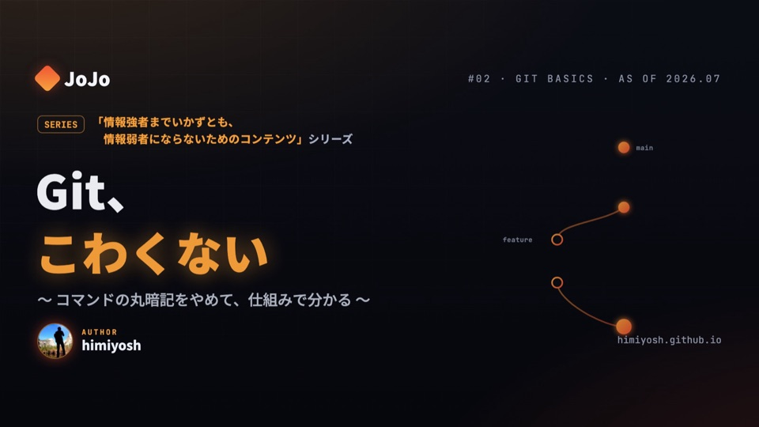

公開スライドデッキ
Git、こわくない
Git初心者向けに、clone/fetch/pull/fork と merge/rebase の判断を4領域モデルで視覚的に整理した Slidev デッキです。Reader の検索・モバイル・印刷にも対応しています。
公開根拠 Reader はスライド本文・実レンダリング・公開登壇者ノートからビルド時に生成され、本文を二重管理しません。
根拠を見る （新しいタブで開きます） ↗
公開スライドデッキ
Git初心者向けに、clone/fetch/pull/fork と merge/rebase の判断を4領域モデルで視覚的に整理した Slidev デッキです。Reader の検索・モバイル・印刷にも対応しています。
公開根拠 Reader はスライド本文・実レンダリング・公開登壇者ノートからビルド時に生成され、本文を二重管理しません。
根拠を見る （新しいタブで開きます） ↗